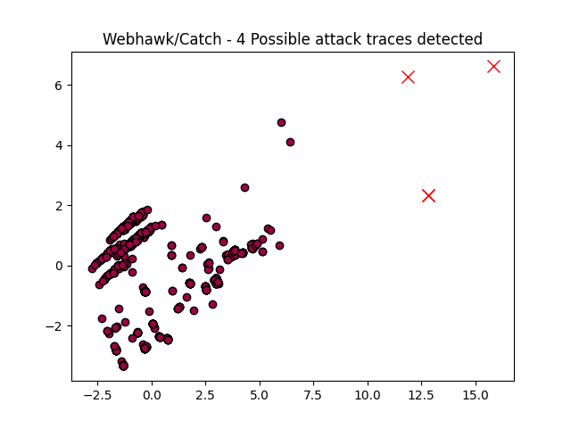

Webhawk Catch ReportUnsupervised learning Web logs/OS processes attack detection. Date: 23/06/25 at 21:07:57 GMTLog file: ./SAMPLE_DATA/RAW_APACHE_LOGS/access.log.2022-12-22 Log type: apache logs Findings: 4 |
 |
| Severity | Related CVE(s) | Line# | LLM Insights(llama3.2) | Log line |
| High | CVE-2022-36144 |
125 | This request appears to be a potential SQL injection attack, utilizing the `base64_encode` function to encode malicious input (`ck996789baidu.com`) in the URL query string. This is similar to a known vulnerability (OWASP Top Ten 2017 - A1: Broken Access Control) that can lead to unauthorized database access and data theft. | 222.186.30.188 - - [22/Dec/2022:05:27:31 -0800] "GET /index.php?s=admin/%5Cthink%5Capp/invokefunction&function=base64_encode&vars%5B%5D=ck996789baidu.com HTTP/1.1" 404 338 "-" "Mozilla/5.0 (Windows NT 10.0# Win64# x64) AppleWebKit/537.36 (KHTML# like Gecko) Chrome/91.0.4472.124 Safari/537.36" |
| High | CVE-2019-14315 |
795 | This request appears to be a potential phishing attempt, as it targets a PHP script with a malicious payload (CKEditor) and attempts to inject user input into the URL. This is similar to known attacks such as OWASP's "Clickjacking" and "Cross-Site Scripting (XSS)" vulnerabilities, which can compromise user data and system security. | 118.107.11.18 - - [22/Dec/2022:14:45:01 -0800] "POST /include/dialog/select_images_post.php?CKEditor=body&CKEditorFuncNum=2&langCode=zh-cn HTTP/1.1" 404 338 "-" "python-requests/2.27.1" |
| High | CVE-2019-14315 |
796 | This web log entry indicates a potential phishing attempt, where a malicious actor attempted to upload an image using the CKEditor plugin on a vulnerable PHP file (`select_images_post.php`). The request originated from a suspicious IP address (118.107.11.18), potentially associated with the "Apache Shiba" worm attack. | 118.107.11.18 - - [22/Dec/2022:14:45:04 -0800] "POST /include/dialog/select_images_post.php?CKEditor=body&CKEditorFuncNum=2&langCode=zh-cn HTTP/1.1" 404 338 "-" "python-requests/2.27.1" |
| High | No CVE found | 841 | This web log entry appears to be a suspicious GET request from an unknown IP address, possibly indicating a bot or scraper attempting to harvest data. This behavior is reminiscent of known attacks like the "Clickjacking" vulnerability (CVE-2010-1929) or Googlebot abuse. | 66.249.66.91 - - [22/Dec/2022:14:57:55 -0800] "GET /?t=1&cn=ZmxleGlibGVfcmVjc18y&refsrc=email&iid=2572d65d1a814c138a77f3b60465fe37&uid=30635594&nid=244+272699400 HTTP/1.1" 200 13196 "-" "Mozilla/5.0 (compatible# Googlebot/2.1# +http://www.google.com/bot.html)" |